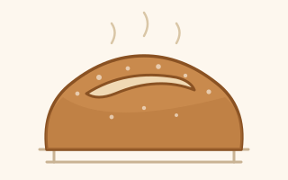

Dried flakes, passed hand to hand. Here is how to wake them up.
The loaf recipe tells you what to do. This page explains why, so that when the dough does something unexpected you can work out what it wants. Read it once, then ignore it.
This follows the method I was taught in a beginners' sourdough workshop, written up here in my own words. Credits are on the contact page.
Two of these matter and the rest are convenience.
| Tool | Verdict |
|---|---|
| Digital scale, in grams | Essential. Without it nothing is repeatable, so nothing is improvable. |
| Covered pot (cast iron, 4–5 l) | Essential. The lid traps steam, and steam is what gives you a crisp crust and a good rise. |
| Bench scraper | Transforms handling sticky dough. Cheap. Get one. |
| Banneton or basket | Holds the shape during the final proof. A bowl lined with a well-floured tea towel does the same job. |
| Lame, or a bare razor blade | For scoring. A very sharp thin knife will do, especially on cold dough. |
| Probe thermometer | Optional at first, then surprisingly useful — for dough temperature and for knowing when the loaf is baked. |
| Wire rack, serrated bread knife | For cooling and slicing. A blunt knife will crush the crumb you worked for. |
Whisk the starter into the water first, until the water turns milky and the starter has dispersed. Then add flour and salt and work it together for 3 to 5 minutes until there are no dry patches left. It will be shaggy, lumpy and stuck to your fingers. That is what it is supposed to look like; it smooths out over the next few hours.
Give the jar a fresh feed at this point too, while you are thinking about it. You have just taken most of your starter out of it.
This is how you build strength without kneading. With damp fingers, take hold of one side of the dough, stretch it upwards until it resists, and fold it over the middle. Turn the bowl a quarter turn and repeat, four times in all. That is one set.
You will feel the dough tighten as you go round, usually by the third or fourth fold of a set. Over the three sets it changes from flat and dense to plump and jiggly. That change is the whole point.
After the last fold, gather the dough into a neat ball with the sides tucked under, so it rises as one mass rather than lopsidedly.
The long rise after mixing and before shaping. It is where most of the gas, most of the flavour and most of the structure come from. Rush it and you get a tight, bland crumb.
Keep the bowl covered so a skin cannot form. Roughly 7 to 8 hours at 24–26 °C, but temperature changes everything, so go by how much the dough has grown rather than by the clock:
| Dough temperature | Look for a rise of about |
|---|---|
| 21 °C / 70 °F | 75 % |
| 24 °C / 75 °F | 50 % |
| 25 °C / 77 °F | 40 % |
| 27 °C / 80 °F | 30 % |
Warm dough carries on fermenting hard through shaping and well into the fridge — it can take ten hours to actually reach fridge temperature — so you stop bulk earlier to leave room for it. That is why some recipes say "double in size" and others say far less: they assume different kitchens.
It is done when the dough is smooth, domed at the edges where it meets the bowl, puffy, and jiggles when you shake the container gently. It should feel stretchy rather than sticky.
Turn the dough out onto a very lightly floured counter and gather it into a loose round. Use a bench scraper against the counter to drag the ball towards you a few times, which tightens the surface. Then leave it uncovered for 30 minutes.
It will spread and flatten during that rest. That is expected — the gluten is relaxing and reorganising, and the slightly dried surface makes the final shape much easier. You can skip pre-shaping on a stiffer dough, but the loaf will be better if you do not.
Flip the dough over, fold the edges into the centre, then turn it seam side down and drag it towards you in a circular motion until the surface feels taut. Dust the top with flour and place it seam side up in a floured banneton.
What you are building is surface tension: a tight skin that makes the loaf rise upwards in the oven instead of spreading sideways. Without it you get something flat, closer to focaccia.
The final rest, after shaping and before baking. You have two options and one of them is better.
| Method | Time | Flavour | Scoring | Crust |
|---|---|---|---|---|
| Cold, in the fridge | 8–36 h | more sour | easier | darker, glossier |
| Room temperature | 2–6 h | milder | trickier | paler |
Cold proofing wins on almost every count. It deepens the flavour, firms the dough so it scores cleanly, makes over-proofing much harder, and lets you bake whenever suits you the next day. Bake it straight from the fridge — do not let it come up to room temperature first.
To test a room-temperature proof, press a floured finger into the dough:
Scoring is not decoration. Gas and steam expand hard in the first minutes of baking, and if the crust sets before they have a way out, the loaf tears open wherever it happens to be weakest. A cut gives the pressure somewhere to go, which is why a scored loaf opens evenly and an unscored one bursts at a seam.
A light dusting of flour before cutting makes the score show up. Scissors are good for snipped patterns, bad for long slashes.

Bottom burning? Slide a baking tray onto the shelf below the pot, or sit the pot on a layer of uncooked rice. Ear browning too fast? Lay a piece of foil over it.
Onto a wire rack, and leave it alone for at least two hours. Four to six is better. The loaf is still finishing on the inside as it cools, and cutting into it early gives you a gummy, claggy crumb and a loaf that stales faster. This is the hardest step in sourdough and there is no way round it.
Always cool completely first. Warm bread in a bag steams itself soggy and moulds fast.
| Method | Best for |
|---|---|
| Linen bread bag | Everyday. Breathes, keeps the crust crisp. |
| Bread box | 2–3 days on the counter. |
| Beeswax wrap | A day or two, cut side protected. |
| Plastic bag | Softens the crust. Fine if that is what you want, or for freezing. |
To freeze: cool completely, wrap well in foil or plastic, then bag it. Good for 2 months, usable for up to 6. Freeze it sliced and you can take out two pieces at a time.
Stale loaf is not a failed loaf — it is croutons, breadcrumbs, or French toast.
Pick the morning you want fresh bread, then count back.
| When | What |
|---|---|
| 2 days before mixing | Get the starter out of the fridge. Feed it at least twice so it is bubbly and reliable. |
| Evening before mixing, ~8 pm | Feed 1:5:5 — 20 g starter, 100 g water, 100 g flour — so it peaks overnight. |
| Mixing day, ~8 am | Mix the dough. Rest 30 min, then 3 sets of folds. |
| Mixing day, morning to afternoon | Bulk ferment, about 7 hours at 24–26 °C. |
| Mixing day, ~3 pm | Pre-shape, rest 30 min, final shape, rest 30 min. |
| Mixing day, late afternoon | Into the fridge, covered. |
| Next morning | Heat the pot for an hour, score cold, bake, cool. |
Baking the same day instead? Skip the fridge, proof at room temperature for 1 to 2 hours after shaping, and bake. Milder flavour, trickier scoring.
Now go and make the loaf.